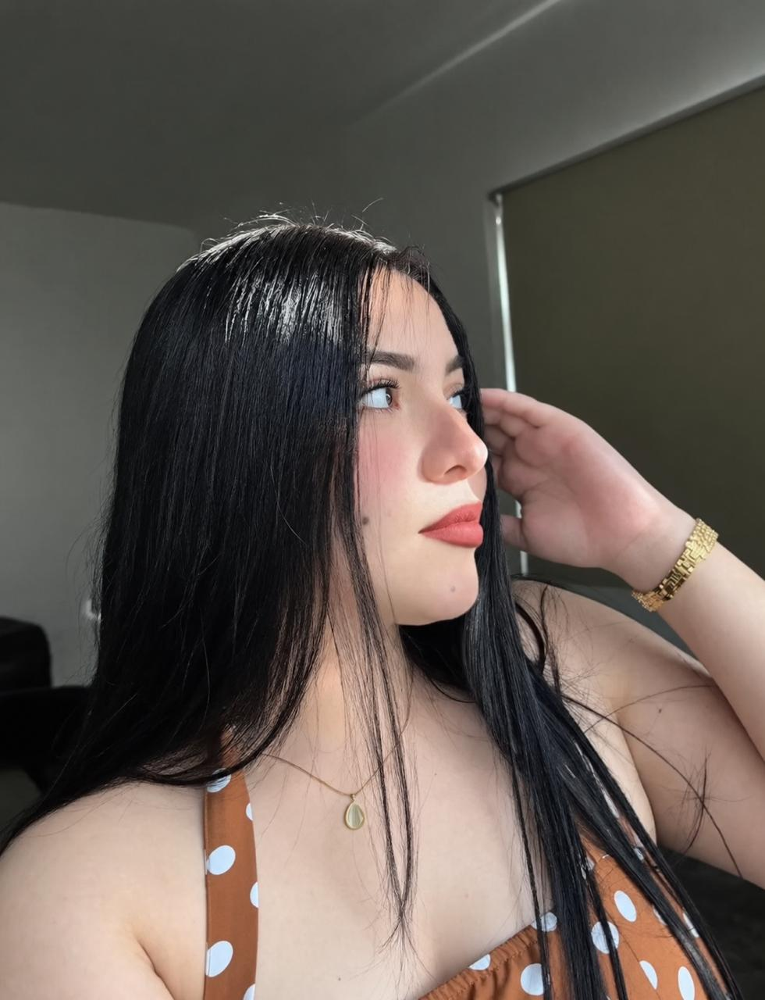
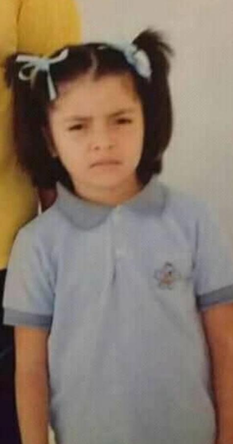
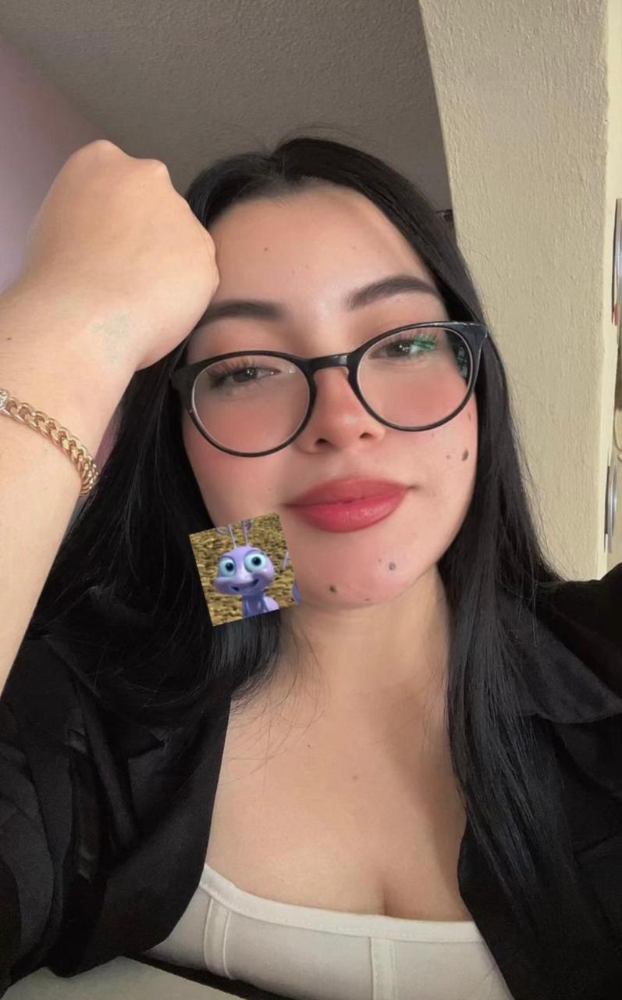

La primera llamada
quizas y para ti sea algun dia mas pero para mi no ya que fue justo el dia que todo inicio
Hecha con cariño
PERDONAME LAS FALTAS DE ORTOGRAFIA TAMO
digital pq mi letra es fea mi vida.
DONDE TODO COMENZÓ
pues agradecerte mi vida ya que gracias a ti tdo inicio
quizas no e siido el mas expresivo o el mas cariñoso contigo pero siempre trato de ser el mas atento contigo ya que me gusta escucharte como la primer fecha en que me leiste un cuento el 10 de abril de 2026, la fecha que ahora guarda el comienzo de nosotros.
DESDE EL 10 DE ABRIL DE 2026
Y todavía nos queda muchísimo por vivir.
PEQUEÑOS RECUERDOS
quizas y para ti sea algun dia mas pero para mi no ya que fue justo el dia que todo inicio
no es un recuerdo muy cariñoso o quizas y si por que esa noche te pusiste demasiado sentimental conmigo y me di cuenta de que quizas de verdad si me amabas
pues no ay mucho que explicar es la fecha en que todo inicio y es una fecha demasiado especial para mi hoy en dia
pues son mi momento favorito de los dias bueno noches jaj tqm
No necesitábamos hacer nada extraordinario, simplemente estar juntos hizo que ese momento fuera especial.
Hay momentos que parecen pequeños, pero cuando se trata de ti terminan convirtiéndose en recuerdos que guardo para siempre momentos podria mencionar mas pero justo ahora no recuerdo mas mi vida
fotos que conservo de ti con cariño
Estas son fotos tuyas que amo demasido por lo lindo de tus lunares, ojos o simplemente pq sales tu y me gustas tu t amo boba



SIN NECESIDAD DE EXPLICARLO TODO
no puches nada ♡
AHORA SÍ
Amai,
bueno ahora si no se si llegue a ser una carta larga o corta o quizas ni carta bien sea pero expresare lo que siento por ti
Hola amai, se que aveces lo nuestro o quizas solo yo llegue a ser complicado contigo, y una disculpa contigo por eso y la verdad agradecerte por aguantarme todos esos cambios de humor muchas veces sin sentido aveces ni yo entiendo en como me puedes llegar a soportar o incluso disculparme despues de querer casi dejarte o dejarte de hablar, la verdad aveces pienso que con esas actitudes infantiles de mi parte aveces puedes llegsr a dejsr de quererme y me siento mal por tener esas actitudes ya que pues la verdad quizas tu si me quieras de la manera mas bonita que puedes llegar a hacerlo
teamodemasiadoamordemivida y disculpa las faltas de ortografia algunas son intencionales otras por error y algunas otras por tonto grascias por continuar conmigo te amo
— yiyiro ♡
Y UNA ÚLTIMA COSA